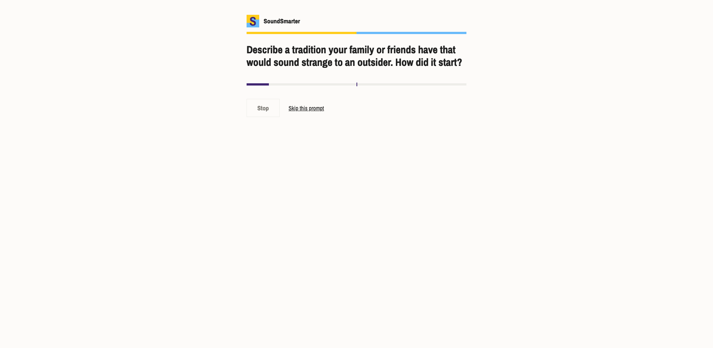
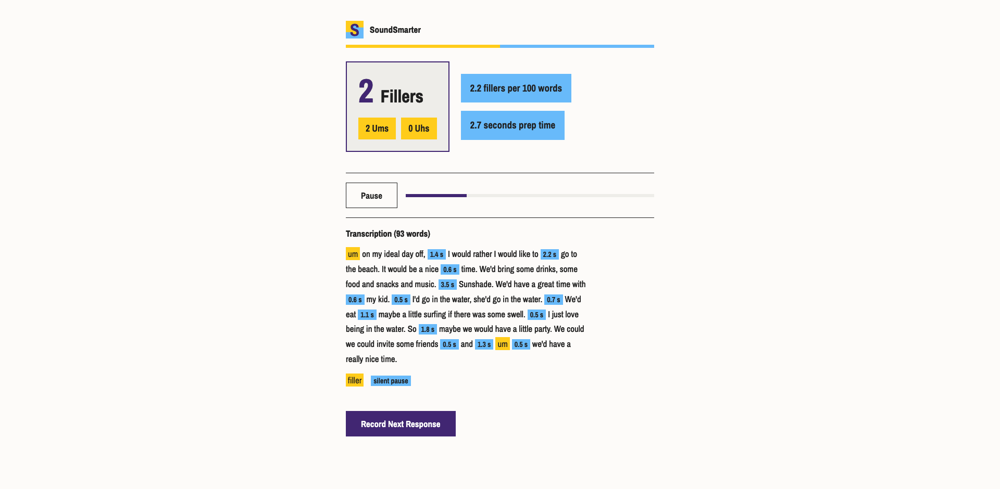

Product Showcase
Current Status: Build 2 live hosted by Render
- Demo code required
- First load may take ~30 seconds
Start Page
User is instructed how to use the app, and what is required of them.

Recording Page
Displays a prompt, begins recording and indicates time elapsed, shows when the minimum 30 seconds have been recorded, allows for prompt skipping, and allows user to move to analysis page.

Analysis Page
Holding location while AI is called, displays ticking-down time until results can be viewed, provides basic context to evaluate metrics that user will see on the results page. Allows user to move to results page when analysis is complete.

Results Page
Shows the metrics, filler word usage, fillers per 100 words, prep time length. Then allows for playback and shows transcript with pauses and fillers indicated. Allows for a new recording to be made.

Analytics
PostHog tracks both the app and this page. Events are sent through the app's own server, so browser ad blockers (e.g. Brave Shields) don't drop them.
App events: take started, take stopped, prompt skipped, analysis done (with filler count, take length and analysis time), results shown, playback started, microphone blocked, transcription failed. Plus pageviews, clicks and session replay.
This page: pageviews, clicks, and "Demo the Product" clicks.

Product Requirements Document
1. Target User & The Job to Be Done
Who is this for? Young professionals, fluent English speakers, who speak under pressure: conversations with executives, interviews, presentations, the moments when nerves show up as fillers and rushed starts. Testers so far: me and test user 1.
What it helps with: Fillers ("um," "uh") make a speaker sound less sure than they are. A pause in the same spot sounds thoughtful. SoundSmarter shows you how often you fill instead of pause, so you can change it.
The painful "Before" workflow: Speakers fill silences with "um" and "uh" and don't know how often. Feedback, if they get any, is vague and lacks measurable detail, so there's nothing to compare against next time.
The "After" workflow with this product: Answer a short prompt out loud for 30–60 seconds, see how many fillers you used, and try again. Later builds track your progress over time.
Core workflow (Build 2):
- Prompt: one short prompt from a bank of 12, in random order (e.g. "Who was your first favorite musician or band? What did you love about them? Who are you listening to these days?"). Skip if you don't like it.
- Record: recording starts when the prompt appears. A fill bar shows time without numbers; Stop unlocks at 30 seconds; hard stop at 60.
- Analyze: speech-to-text that keeps every filler and times every word. While it runs, the screen shows reference numbers to compare against.
- Results: filler count (ums and uhs), fillers per 100 words, prep time (prompt to first sound), playback of the take, and the transcript with fillers and silent pauses marked. Numbers only; no AI-written feedback.
How I'll know it works: A tester can complete the workflow without help and gets back a filler count. The count matches what I hear when I listen back to the same take, and the tester says the count tells them something they didn't know.
2. Scope & Explicit Non-Goals
- In Scope (Core Workflow): prompt → record → analyze → metrics → one recommendation → next prompt. Build 1 covers prompt → record → transcribe → filler count.
- Out of Scope #1: Grammar correction and pronunciation or accent scoring. This is not a tool for language learners.
- Out of Scope #2: Tailoring feedback to the audience (dinner party vs. office vs. classroom). Every user gets the same treatment for now.
- Out of Scope #3: Live coaching while you speak. All feedback comes after the take.
3. How It Works Under the Hood & Riskiest Assumption (Week 2+)
Riskiest Assumption: That filler words can be detected accurately enough to trust. Speech-to-text tools often clean fillers out of transcripts, and words like "like" are only sometimes fillers ("I like jazz" vs. "it was, like, fine"). If the filler count is wrong, the product's core metric is wrong.
How Build 2 tests it: I hand-counted the ums and uhs in four phone recordings and sent the same files to three speech-to-text services. On the three normal takes (18 fillers): Deepgram Nova-2 caught 13; CrisperWhisper 2 and ElevenLabs Scribe v3 caught all 18. Deepgram also dropped the "uh" at the very start of a take, which would have made prep time 2 seconds too long. No service could tell a filler "um" from "um" used as a word, so that stays a known gap. Small sample: one speaker, four takes.
Simple Architecture (Build 2): [Browser records the take] → [Python server (FastAPI) on Render] → [CrisperWhisper 2 via Nyra's API: verbatim transcript, word timestamps] → [Metrics computed in code: fillers, fillers per 100 words, prep time, silent pauses of 450 ms or more] → [Results page]. Analytics: PostHog, relayed through the app's own server so ad blockers don't drop events.
4. Unit Economics & Analytics Snapshot (Updated Weekly)
Build Log
Build 1: Nov. 9, 2026 – First Working Prototype
- What shipped: A local prototype (Python/FastAPI server + one web page). An intro screen explains the task; the user gets one of 5 fixed prompts, records 30–60 seconds in the browser, and sees how many times they said "um" and "uh", plus the transcript. Skip discards the take and moves to the next prompt. Filler counting is done in code and covered by automated tests.
- Things learned with AI: Directing a coding agent is mostly writing things down: it only knows what's in AGENTS.md. After early misses I added my experience level, a rule to teach conventions up front, review before every commit, and strict handling of secrets. Read the assignment yourself and check the agent's facts and paraphrases. Shrink scope to what the tool actually does. When something fails, isolate it: comparing a phone recording with the browser showed that both the speech model and the browser's noise suppression were dropping fillers. Picked up the git loop (status, diff, add, commit, push), Conventional Commits, branches, and pull requests.
- What broke / changed in PRD: First live test counted 0 fillers when I'd said 5–8. Two causes: Deepgram's newest model (Nova-3) drops more fillers than the older Nova-2, and the browser's built-in noise suppression flattened soft "um"s. Switching to Nova-2 and raw microphone audio brought it to about 4 of 5–6: it works but still undercounts, which confirms filler detection accuracy as the riskiest assumption. PRD changes: Build 1 now counts only "um" and "uh" (what Deepgram reliably detects); target user broadened from MBA students to young professionals. Test user 1 couldn't tell what to do on the first screen, so I added an intro screen and a 30-second minimum before Stop.
- Cost & time this week: ~$0.10 (Deepgram, about 15 short test calls, covered by free credit) · 4–5 hours total (2 on the prototype)
Build 2: Nov. 16, 2026 – Live, Redesigned, with Analytics
- What shipped: Build 2, live online and on my laptop. New five-screen design (landing, start, record, analyze, results) in yellow, purple and maya blue. Speech-to-text switched from Deepgram to CrisperWhisper 2. Results show fillers, fillers per 100 words, prep time, playback and a marked-up transcript, all computed in code. PostHog on the app and this page. One demo code can now be reused by tester after tester, with a daily cap to protect the bill.
- Things learned with AI: Test every option the same way before trusting a vendor's benchmark. Isolate the cause: a phone recording showed the missing opening "uh" was Deepgram, not the browser. Brave's Shields block analytics; routing PostHog through my own server fixed it. A failed deploy can look like a broken app: Render didn't redeploy on merge, so I deployed manually.
- What broke / changed in PRD: Deepgram missed about a quarter of my fillers and every opening one, so speech-to-text moved to CrisperWhisper 2. The page went blank when the microphone was blocked; it now says why. PRD changes: numbers instead of AI-written feedback; new design; prep time, fillers per 100 words and silent pauses added; one reusable demo code instead of many.
- Cost & time this week: $10 (Nyra prepaid, under $1 used; everything else free) · 6–8 hours
Research Impetus
[Research Impetus: copy to come]